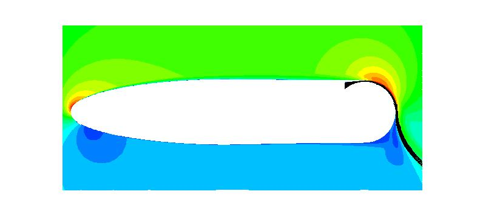

|
Langley Research CenterTurbulence Modeling Resource |
Exp: 2-D Coanda Airfoil with Tangential Wall Jet
Return to: Data from Experiments - Intro Page
Return to: Turbulence Modeling Resource Home PageThe data on this page were provided by
K. Paschal.
These experimental data are for an airfoil with rounded (circular) trailing edge,
over which a tangential jet is blown, causing reduced trailing edge flow separation due to the Coanda effect.
The data were taken in the Basic Aerodynamic Research Tunnel (BART) at NASA Langley.
Several different blowing coefficients were tested. (The jet blowing coefficient Cmu is defined by
mdot*u_jet/(q_inf*S), where mdot is the jet mass flow rate, u_jet is the jet exit
velocity, q_inf is freestream dynamic pressure, and S is the model chord times span.)
Current documentation can be found in:

Some relevant information is given here, but the
interested reader is referred to the above publication for complete details:
The geometry file describing the Coanda airfoil cross-section shape is
here: Airfoil Definition.
Currently available experimental data are provided below.
Note that the LDV data (velocity profiles) were taken in separate tests from the Cp data. Thus, there may be small differences in
the conditions.
Return to: Data from Experiments - Intro Page
Responsible NASA Official:
Ethan Vogel
Page Curator:
Clark Pederson
Last Updated: 07/06/2022